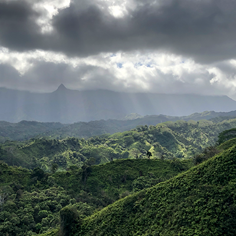
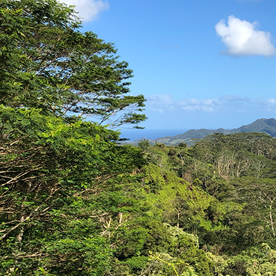
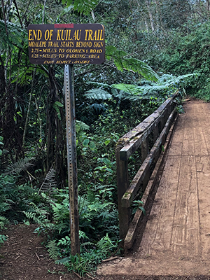

The Kuilau Ridge Trail

We only recently discovered the Kuilau Ridge Trail, but it has quickly become one of our favorites!
The Kuilau Trail is a great walk for enjoying the many species of plant life on Kauai. Follow the old road that turns into a
trail that leads you to amazing panoramas of Makaleha Mountains.
The beginning of the trail will introduce you to a variety of native and non-native plants. At about the one mile point you
can take a break in a grassy field bordered by an Ohia forest, a picnic table and sweeping views of lush valleys and Mount Waialeale
and the Makaleha Mountain Range.
The Kuilau Trail connects here to an east route that meets up with the Moalepe Trail. Further down the trail you will come to a
wooden footbridge which crosses the Opaekaa Stream.
It takes a bit of effort to get to the trailhead, but it's totally worth it.
 